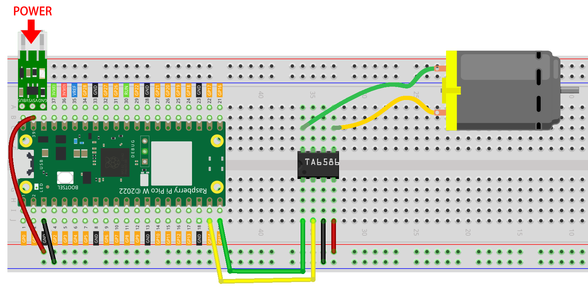

2.5 Motor & Fan
Now we use the TA6586 to drive the DC motor to make it rotate clockwise and counterclockwise. Since the DC motor requires a relatively large current, for safety reasons, here we use a power module to supply power to the motor.
Component List
Raspberry Pi Pico W x1
MicroUSB cable x1
830 Tie-Points Breadboard x1
TA6586 x1
DC Motor x1
Li-po Charger Module x1
Battery Holder x1
Jumper Wire Several
Component knowledge
transistor
Buzzer
Schematic

Note
Since DC motors require a high current, we use a Li-po Charger module to power the motor here for safety reasons.
Make sure your Li-po Charger Module is connected as shown in the diagram. Otherwise, a short circuit will likely damage your battery and circuitry.
Connect
Code
Note
Open the
2.5_motor_and_fan.pyfile under the path ofSuper-Starter-Kit-for-Pico\Python\1.Projector copy this code into Thonny, then click “Run Current Script” or simply press F5 to run it.Don’t forget to click on the “MicroPython (Raspberry Pi Pico)” interpreter in the bottom right corner.

Click “Run current script”, the motor will rotate back and forth in a regular pattern.
The following is the program code:
import machine
import utime
motor1A = machine.Pin(14, machine.Pin.OUT)
motor2A = machine.Pin(15, machine.Pin.OUT)
def clockwise():
motor1A.high()
motor2A.low()
def anticlockwise():
motor1A.low()
motor2A.high()
def stopMotor():
motor1A.low()
motor2A.low()
while True:
clockwise()
utime.sleep(1)
stopMotor()
utime.sleep(1)
anticlockwise()
utime.sleep(1)
stopMotor()
utime.sleep(1)